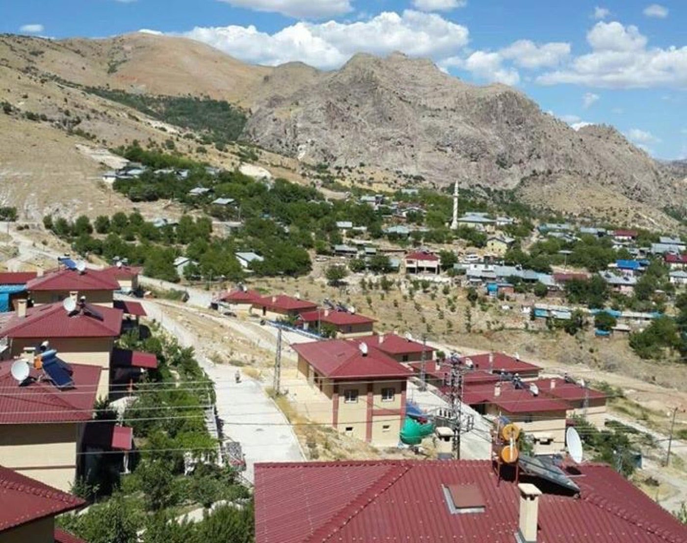
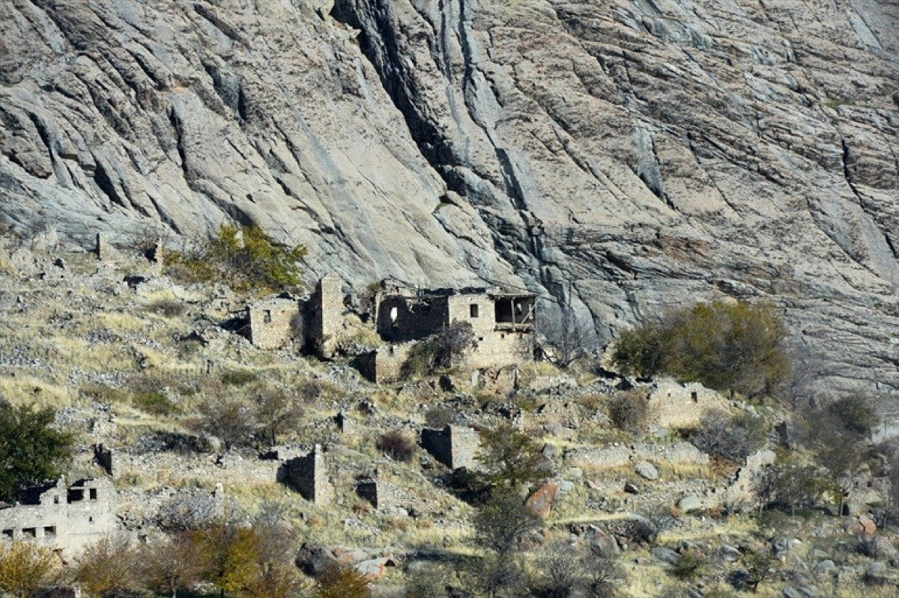
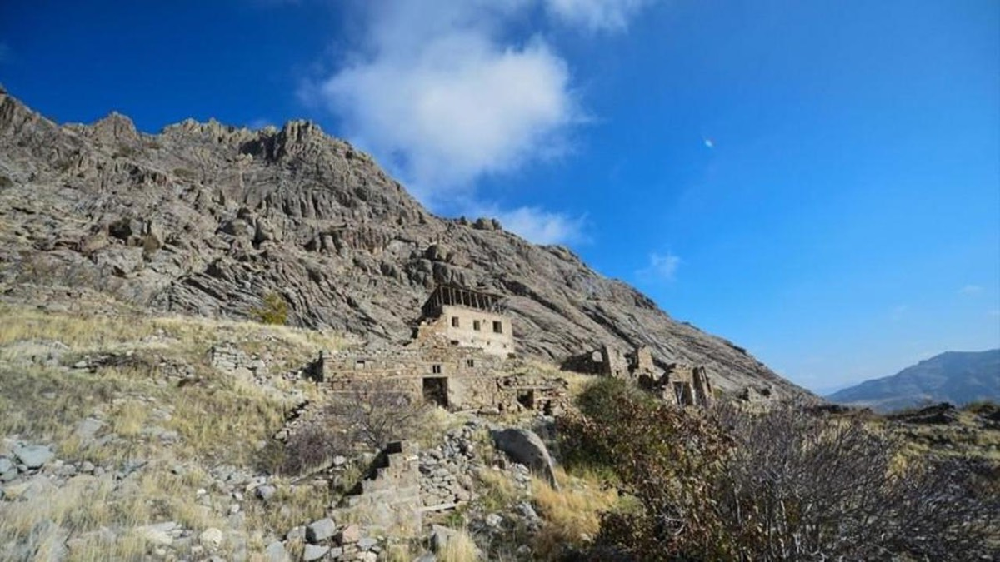
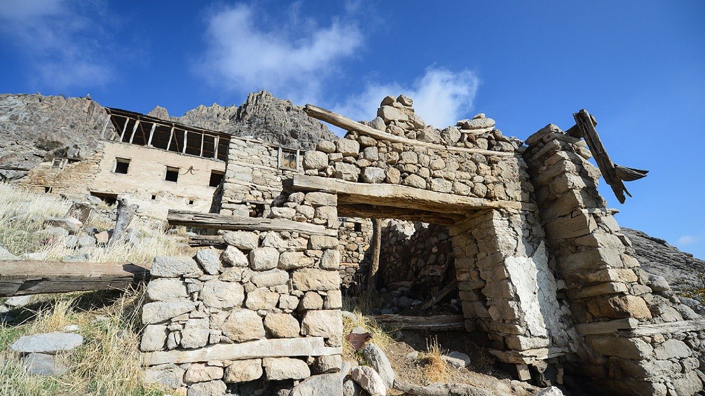
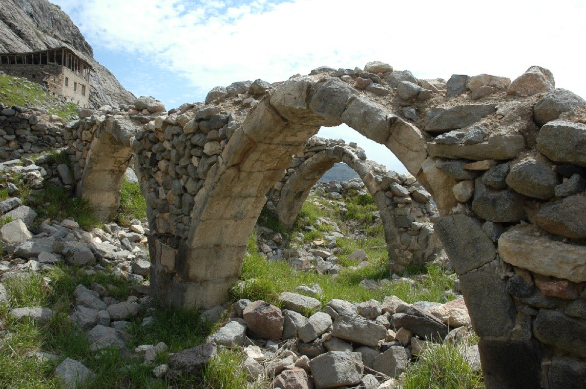
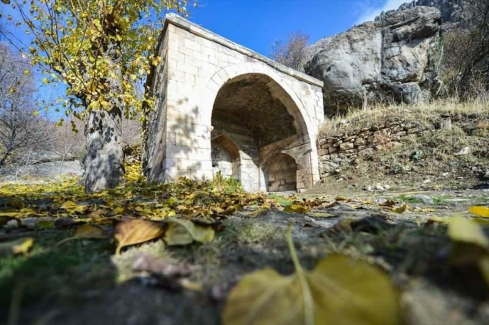
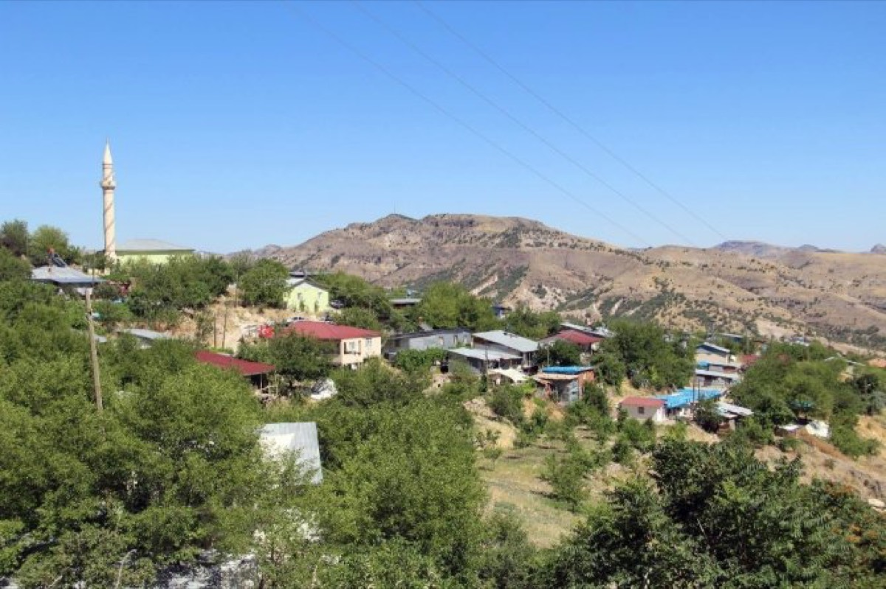

Yapılar ve Bugün
Köyden Kareler
Ayakta kalan tarihî yapılar ve bugünkü Ulukale. Terk edilmiş eski köy, her mevsim ayrı bir güzelliğe bürünüyor.

Bugünkü köy — dağ eteğinde

Eski Cami

Ferruhşad Bey Türbesi

Tarihî çeşme

Taş sivil mimari

Tonozlu iç mekân

Eski köy kalıntıları · Foto: Hürriyet

Dağ eteğinde eski köy · Foto: Haber7

Ahşap hatıllı taş konak · Foto: AA

Eski cami kemerleri · Foto: Kültür Portalı

Tarihî çeşme · Foto: Haber7

Bugünkü köy ve cami · Foto: İstanbul Haber
Fotoğraflar akademik yayınlar ve ulusal basından (AA, Hürriyet, Haber7, NTV, Kültür Portalı, İstanbul Haber) derlenmiştir; her görselin altında kaynağı belirtilmiştir. Telif hakları kaynaklarına aittir; hak sahibi kaldırılmasını isterse iletişime geçin, hemen kaldırırız.